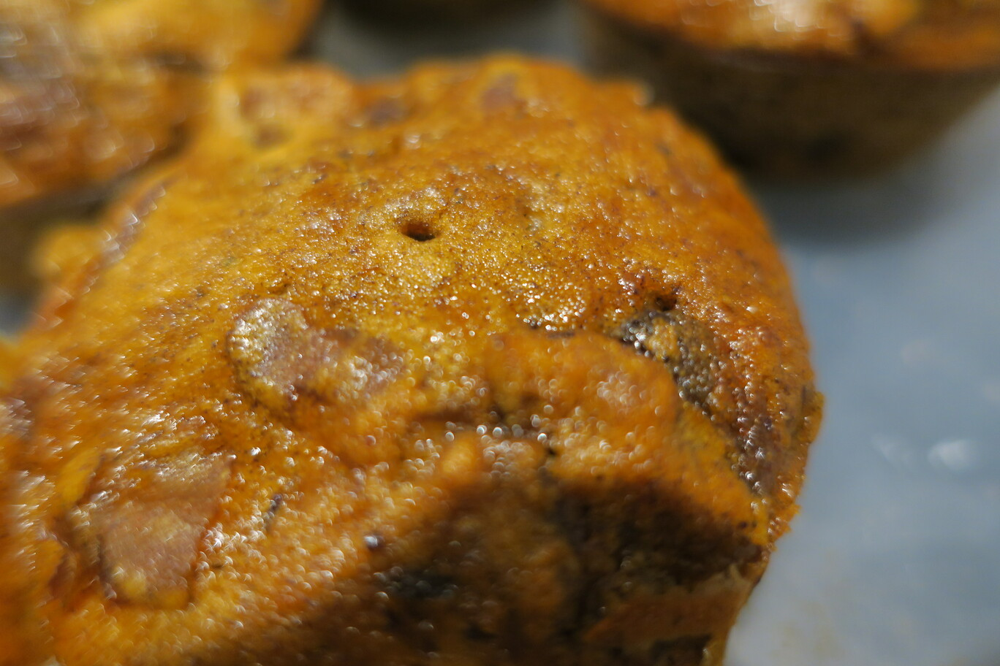

Sticky Date Pudding

- 280g pitted dates, chopped
- 1 tsp bi carb soda
- 1 cup boiling water
- 1/4 cup brown sugar , loosely packed
- 6 tbsp unsalted butter , softened
- 2 eggs
- 1 1/4 cups plain flour
- 1 1/2 tsp baking powder
Preheat oven to 180C Place dates in a bowl, sprinkle over baking soda and water in saucepan. Bring to boil and then let sit for 10 minutes, then mash well Beat butter and sugar in a bowl until combined and smooth Beat in eggs Add flour then sprinkle baking soda across the surface. Add dates, mix quickly until dates are well incorporated into the batter. Pour into muffin tray Bake for 12-15mins